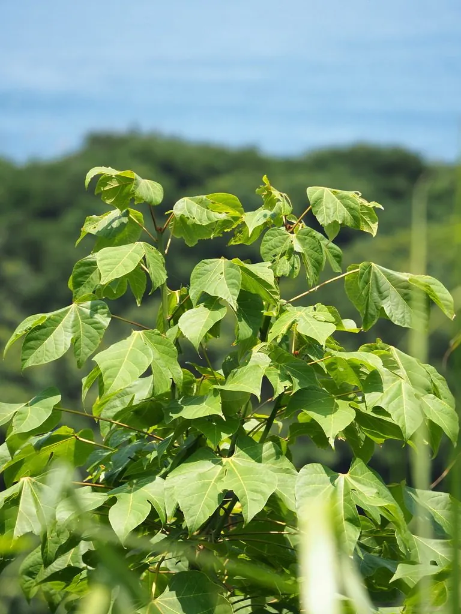

乔木 · 植物界
梧桐 Firmiana simplex

中国传统的庭院树，叶大如掌，树干青绿光滑，秋季叶色转黄，因“凤凰非梧桐不栖”的传说而闻名。
- 分类
- 门被子植物门纲木兰纲目锦葵目科梧桐科属梧桐属
- 栖息环境
- 平原、丘陵与庭院，喜光喜湿，不耐严寒与积水
- 地理分布
- 中国华北以南各地栽培，日本亦有引种
- 保护级别
- 暂无评估；中国未列入国家重点保护野生植物名录
物种志
梧桐为落叶乔木，高可达 16 m，树干挺直，树皮青绿色、平滑；叶片掌状 3–5 裂，直径可达 30 cm，裂片全缘，叶柄与叶片近等长。圆锥花序顶生，花单性同株，淡黄绿色；蓇葖果成熟前开裂呈叶状，种子圆球形，着生于果瓣边缘，形如小舟上的圆珠，故有“青桐”“碧梧”之称。
梧桐原产中国，栽培历史悠久，华北以南各地常见，喜光、喜深厚湿润土壤，生长迅速。木材轻软，可制乐器、箱匣；树皮纤维可造纸；种子可榨油，炒食不宜过量。古人以梧桐引凤、一叶知秋，古琴面板多用梧桐木制作，故琴又称“丝桐”，梧桐因此成为传统文化中的祥瑞之树。梧桐生长较快，幼苗期需注意防寒，成年树萌蘖能力强，被砍伐后能从根部萌发新枝；江南园林中常将梧桐与芭蕉、竹、太湖石搭配，构成经典庭院景致。
形态与习性
- 株高可达 16 m，树皮青绿色、平滑
- 花期6–7 月，花淡黄绿色
- 果期9–10 月，蓇葖果开裂如叶状
- 光照喜光，稍耐阴
- 水分喜湿润，怕积水
- 土壤深厚肥沃、排水良好的沙壤土
- 主要用途庭院观赏、制琴与箱匣、树皮纤维造纸
趣味知识
- 梧桐的蓇葖果裂开如小舟，种子点缀在果瓣边缘，形似“叶上明珠”。
- 古琴面板多选用梧桐木，因其木质松透、共鸣性好，故琴又称“丝桐”。
- “凤凰非梧桐不栖”的说法流传已久，使梧桐成为中国文化中的祥瑞之树。